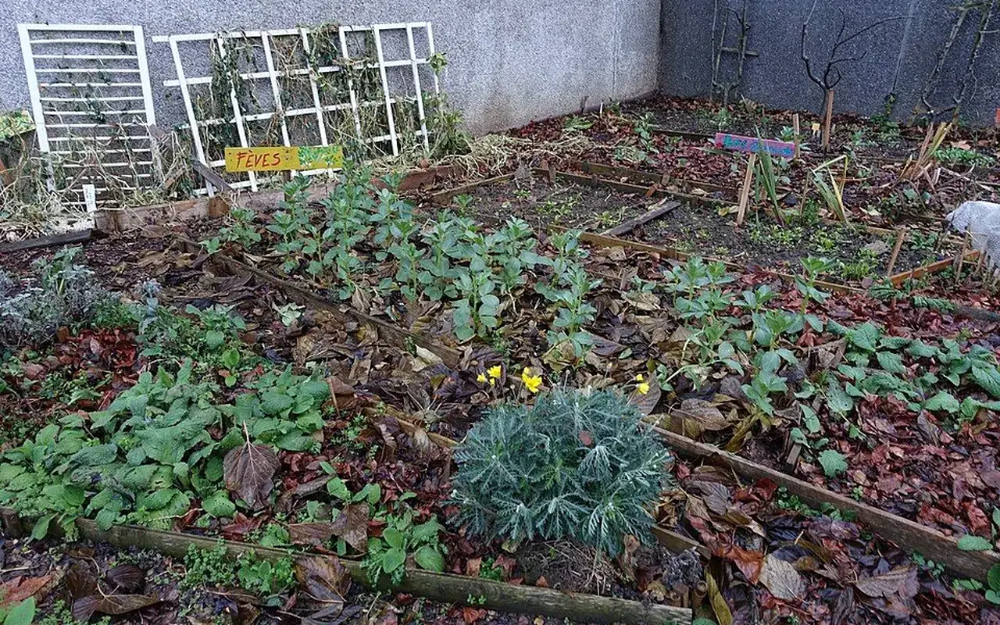

Lancement Saint-Étienne, structuration associative, observatoire local et premiers outils.
Espace interne - non indexé
Vision 2035
Une feuille de route pour faire émerger une plateforme nationale autour du patrimoine vacant, du réemploi et de la participation citoyenne.

Cette vision exprime une trajectoire de structuration. Elle ne constitue pas un engagement de résultats déjà acquis et devra être ajustée selon les moyens, les partenariats et les validations officielles.
Premières antennes locales à structurer avec référents, méthodes et gouvernance.
Observatoire national en construction, données qualifiées et cartographie progressive.
Réseau national structuré autour des pôles, des bénévoles et des partenaires.
Objectif 2035
Devenir une référence nationale du patrimoine vacant et du réemploi, en aidant les territoires à repérer, réhabiliter, réemployer, mobiliser et transmettre.
Faire du logement vacant une ressource utile, pas un angle mort
La page gagne en crédibilité lorsqu'elle distingue clairement le repérage, la qualification juridique, le dialogue avec les propriétaires et les usages possibles. TVF peut ainsi parler aux communes, aux habitants et aux propriétaires sans annoncer de résultat non vérifié.
Un ordre de grandeur national qui justifie une méthode de repérage, de qualification et d'accompagnement local.
Le sujet est déjà porté par de nombreux territoires, avec un besoin d'outils simples et de coopération de proximité.
Le recyclage foncier est un levier national de revitalisation, souvent porté par des collectivités et acteurs publics.
Ce repère illustre l'échelle des espaces à transformer sans artificialiser davantage les sols.
Sources publiques de contexte : Zéro Logement Vacant pour la vacance résidentielle et l'outillage des collectivités ; Cartofriches - Cerema pour le repérage et le recyclage des friches. Ces repères ne sont pas des résultats de Territoires Vivants France.
Retours terrain à recueillir
Témoignages utiles
Les témoignages ne doivent pas être inventés. Ils seront publiés uniquement après accord explicite et vérification du contexte.
Voix à écouter
- Propriétaires confrontés au coût des travaux
- Collectivités cherchant une méthode de repérage
- Habitants concernés par la vacance de rue ou d'immeuble
Preuves attendues
- date et territoire
- autorisation de publication
- lien avec une action vérifiable
Indicateurs d'impact
Les chiffres propres à Territoires Vivants France doivent rester à zéro ou en attente tant que les signalements, projets, matériaux, bénévoles et territoires ne sont pas enregistrés puis validés dans base de données sécurisée. Cette page est prête à accueillir des indicateurs réels, datés et vérifiables.
Vision 2035 : donner plus de contexte, de méthode et de lisibilite
Cette page s’inscrit dans l’architecture générale de Territoires Vivants France. Elle doit aider le visiteur à comprendre le probleme traite, le public concerne, le rôle de l’association, les données utiles, les limites actuelles et l’action possible. Le contenu doit donc depasser la simple presentation pour devenir une ressource de travail.
La ligne éditoriale retenue est institutionnelle : expliquer les enjeux, ne pas inventer de résultats, distinguer ce qui est opérationnel de ce qui est prépare, et donner des chemins d’action clairs pour les habitants, collectivités, entreprises, propriétaires, bénévoles et partenaires potentiels.
Contexte
Situer la page dans les enjeux nationaux de vacance, réemploi, insertion, sobriete fonciere et revitalisation locale.
Methode
Montrer comment TVF qualifié les informations, mobilise les acteurs et construit une réponse progressive.
Action
Orienter le visiteur vers le bon formulaire, la bonne ressource ou la bonne page de décision.
Regle de cohérence : chaque page doit renforcer la confiance dans le projet national sans ajouter de chiffres ou de promesses non vérifiés.
Une stratégie de long terme pour relier habitat, foncier, réemploi et solidarité
La revitalisation territoriale ne peut pas être pensée par silos. Un logement vacant peut dépendre d’un commerce fermé en rez-de-chaussée, d’une rue peu attractive, de matériaux trop coûteux, d’un manque d’ingénierie, d’un propriétaire isolé ou d’une commune sans capacité technique. La vision 2035 de TVF doit articuler observation, action locale, financement, réemploi et inclusion.
L’objectif n’est pas de promettre un réseau national déjà réalisé, mais de construire une trajectoire crédible : Saint-Étienne comme base, premières antennes, observatoire national, banque de matériaux, fonds solidaire, outils numériques et gouvernance transparente.
Des données sourcées, des états vides assumés, des partenariats publiés seulement lorsqu’ils existent, une mesure d’impact vérifiable et une méthode commune pour les antennes.
Les effets d’annonce, les chiffres non datés, les faux projets, les logos non autorisés, les cartes non vérifiées et les promesses de financement sans cadre juridique.